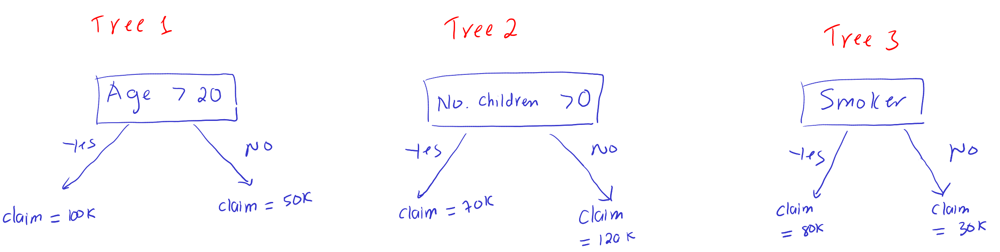

AYU - Individual Week 6
Bagging Models
Problem 1
A bagging model consists of 100 trained decision trees. The response variable is whether a customer makes a claim on a policy. For a given customer, 60 trees in the bagging model predicts a customer would make a claim on the policy while 40 other trees predicts the customer would not make a claim on the policy. What is the final prediction of the bagging model?
Problem 2
A bagging model uses three boostraping samples to train a decision with one split (called a stump). The response variable is the claim amount of the customer on a policy. The three trees after training are as follows.

- Use the bagging model to predict the claim amount of a 25 year-old female customer who is not a smoker. The customer does have 2 children.
Gradient Boosting
Problem 3
Following the sample calculation in the below link to do this problem.
Given the data.
| X | y |
|---|---|
| -1 | 1 |
| 2 | 2 |
| 4 | 5 |
We will train a gradient boosted tree (stump) on this data with the learning rate of 1. The boosting model will go through several rounds
Calculate the prediction of the first round.
Calculate the target of the second round
Suppose that the stump in the second round is: \(X<3\). Calculate the predictions of the second round. What do the second round predict?
What are the final predictions of the gradient boosting model for \(y\) in the training data after the second round?
Calculate the target of the third round.
Suppose that the stump in the third round is: \(X<0.5\). Calculate the predictions of the third round. What do the third round predict?
What are the final predictions of the gradient boosting model for \(y\) in the training data after the third round?
Adaboost (Optional)
Problem 4 (Optional)
This problem gives practice on calculating an Adaboost Model. This problem is optional. Complete this problem correctly will give you 50% point extra credits for this AYU.
Following the below sample calculation to do this problem.
Given the data.
| \(x_1\) | \(x_2\) | \(y\) | |
|---|---|---|---|
| 0 | 1 | 2 | 1 |
| 1 | 2 | 5 | 1 |
| 2 | 3 | 4 | -1 |
| 3 | 4 | 0 | -1 |
| 4 | 0 | 1 | -1 |
Suppose we use this data to train an Adaboost model with the learning rate \(L=1\) and obtain the three stumps as follows.
Stump 1: \(I(x_1<2.5)\). Where \(I(\cdot)\) is an indicator function, taking value \(1\) if the condition inside the parenthesis is true or \(x_1<2.5\) and \(-1\) otherwise. This means that this stump will predict \(1\) for if \(x_1<2.5\) and \(-1\) otherwise.
Stump 2: \(I(x_2>1.5)\)
Stump 3: \(I(x_2>4.5)\)
Compute the weight of the data in the first round.
After the first round, which observations should have the weights increased? Which observations should have the weights decreased? Explain why.
Compute the weights of the data in the second round and third round.
Compute the voting powers of the three stumps. Which stump has the highest voting power?
Draw the decision boundary of the adaboost. This video shows how to make decision boundary of the adaboost: link
Class note for drawing decision boundary of Adaboost can be found here: Link
Compute the error (misclassification) of the adataboost.